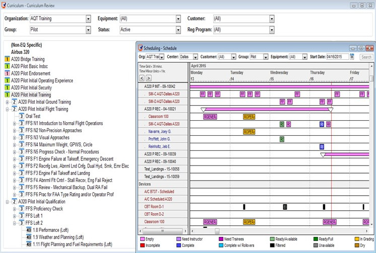
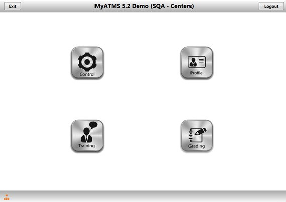

ATMS (Advanced Training Management System) for Regulatory Compliance is designed for manufacturing, transportation and logistics companies; including freight forwarders, 3PL’s, courier operations, shippers and carriers of hazardous materials/dangerous goods and airport authorities.
- Build training curriculums for existing presentation-based training.
- Organize, maintain and administer training records.
- Schedule training.
- Deliver e-learning.
- Collect and store training results.
- Automatically reschedule future training for desired dates.
- Provide reporting and analysis capabilities.
MyATMS is a modern, web-based training management system designed for instructors and trainees with access to up-to-the-second training schedules, and notifications. Provides trainees and instructors with flexible access to their records, schedules and e-learning from the web or mobile devices.
- Instructors and trainees may view all of their own training records stored within the central ATMS repository, reducing workload.
- MyATMS makes it easy to manage and measure training more efficiently and accurately from anywhere through a web browser or tablet device.
- Instructors can use MyATMS Mobile to grade on the mobile device while disconnected from the network.
